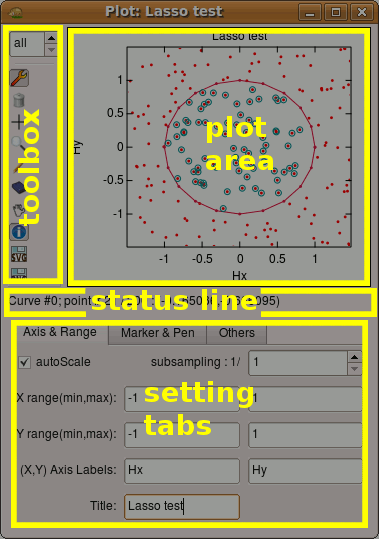
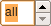

|
NanoQt documentation: home > plotter |
|
The NanoQt plotter can be used to display a set of curves. Each curve is a sequence of 2D data points. Points within a curve can be displayed as symbols, connected by lines or both. Curves within a plot are identified by a number called curve index. The first curve has index zero. You have the choice to display any of the curves stored in the plot, or to display all of them at once. The Plot WindowThe plot window has the following elements:
The setting tabs can be displayed or hidden by clicking on the Settings button of the toolbox. |  |
The following tools are available:
| Tool | action |
|---|---|
|  Curve selector | Selects the curve that will be displayed by its index number. Curves are indexed from zero. The value below zero is a special value called “all”: it means that all curves will be displayed. |
| Settings | Click here to show the setting tabs on the bottom of the window. Click again to hide them. |
| Clear curve(s) | Click here to delete the currently displayed curve. Warning: if the curve selector is set to “all”, then all the curves will be deleted. |
| Pick mouse coordinates | Activate this tool, then click anywhere on the plot to see the coordinates of the point where you cliqued. |
| Zoom | Activate this tool, then click and drag to define a new zoom region. When this tool is active, you can autoscale the plot by double clicking anywhere in the plot area. |
| Draw curve | Activating this tool and then clicking several times on the plot window will create a new curve with the points defined by the clicks. |
| Move point | Activate this tool, then click and drag on an existing data point to move it. |
| Information on point | Click on an existing data point to get information on it. The information is displayed in the format “Curve #XX; point # XX / XX : (XX,XX)”. The provided information is: the index of the curve, the index of the point within the curve, the total number of points in the curve and the coordinates of the point. |
| Rubber point | Activate this tool, then click on an existing data point to erase it. |
| Save graphic in SVG file | Save the plot as an SVG file. SVG is a vector graphic format. SVG files can be opened and modified by many drawing softwares, including Inkscape (free and multi-platform) and Adobe Illustrator. They can be scaled and printed at any size without resolution problems. |
| Save graphic in PNG file | Export a rendering of the graphic, at the current displayed size, as a PNG file. PNG is a losslessly compressed, full color image format. As any image files (JPEG, GIF, TIFF...) PNG files have a fixed size in pixels and cannot be scaled losslessly. |
This is a set of three tabs:
The settings in the first and third tab can be altered
programmatically using the properties of the Plot
object associated with the plot window. The settings of the
“Marker & Pen” tab can be altered programmatically using
the set_curve_options()
method of the Plot object.
From the JavaScript side, the plot window is represented by a Plot
object returned by the new Plot() constructor (see
below). The data stored in any curve is an array of points. Each point
is an array of two numbers. Thus, a complete curve is an array of arrays
of two numbers, like the following:
// A curve with four data points.
var curve_data = [ [0.2, 0.6], [2.1, 2.7], [4.8, 3.4], [3.2, 2.5] ];This is the format you have to use when sending data to a plot via
the add_curve() method. This is also the format of the data
returned by the get_data() method. Both methods are
described below, after the constructor.
At any time, there is one curve in the plot that is the current curve. The current curve is the one that will collect the data you send to the plot unless you explicitely specify otherwise. You can query and change the current curve programmatically (see the Plot object properties below). This is different from the displayed curve that you set with the curve selector on the plot window. Changing the displayed curve has no effect on the current curve. However, changing the current curve does change the displayed curve in order to make the current curve visible, unless the displayed curve is set to “all”.
Plots are created using the new Plot() constructor. It
is advisable (but not mandatory) to provide a title to the constructor.
You can also provide data to plot, if it is already available. If not,
an empty plot is created. You will be able to add data to it later.
// Make some random data.
var data = [];
for (var i = 0; i < 200; i++) data[i] = [random(), random()];
// Plot it.
var plot = new Plot("Random data", data);The syntax of the constructor:
| Constructor | description |
|---|---|
| new Plot(title, curve...) |
Creates a new plot window. The title is optional. If provided, it should be the first
argument. The default title is “unnamed”. The unicity of
the title will enforced by adding a number after the requested title
if necessary. The title can be used to later retrive a reference to
the plot (see Providing curves in the constructor is optional. The provided curves, if any, will become curves 0, 1... The constructor returns an opaque Plot objet representing the plot window. You can then act on the plot using the methods and properties below. |
The object returned by the new Plot() construct serves
as a handle to control the plot. Make sure to store this object in a
variable. If you later delete this variable, the plot
window will be destroyed. Beware that not storing the returned plot
object is just like deleting it right away!
new Plot() returns a Plot object that serves as a handle
to the plot. You can act on the plot by calling methods of this object
like:
// Make it look more like a scatter plot.
plot.set_curve_options(0, { pen_style: "none" });
// Add more data.
plot.new_curve();
for (var x = 0; x < 1; x += 0.01) plot.add_point(x, exp(-x));The followind methods are available:
| Method | description |
|---|---|
| new_curve() | Creates a new empty curve. This new curve becomes the current curve. Returns the index of the newly created curve. |
| add_point(curve_idx, x, y) | Adds a point at (x, y) to the curve of index curve_idx. If curve_idx references a non-existing curve, it will be created. curve_idx is optional: if omitted, the current curve will be used. |
| add_curve(curve) | Creates a new curve and populates it with the provided data. This new curve becomes the current curve. Returns the index of the newly created curve. |
| add_function(function, intervals) | Draws the given function into a new curve. The current plot
range [x_min, x_max] is sampled at
intervals+1 equally-spaced points. These samples are added as
a new curve to the plot. intervals is optional and defaults
to 1024. This new curve becomes the current curve. Returns the index
of the newly created curve. |
| get_data(curve_idx) | Returns the data of the curve referenced by curve_idx. |
| get_index_list() | Returns the list of valid curve indices as an array of integers. |
| get_curve_options(curve_idx) | Returns an object describing the display options of the curve referenced by curve_idx. See below for a description of the object. |
| set_curve_options(curve_idx, options) | Modifies the display options of the curve referenced by curve_idx. options is an object describing the settings to be changed. See below for a description of the object. |
| clear(curve_idx) | Removes the curve referenced by curve_idx. |
| save(format, filename) | Saves the plot to a file with the provided file name. The format argument is optional. If provided, it should be either "JSON", "SVG" or "PNG", either upper- or lower-case. If omitted, defaults to "JSON". |
| setTool(tool_name) | Selects a tool from the toolbox. The parameter should be a string equal to either "pick", "zoom", "draw", "erase", "move" or "info". This method has the same effect as clicking on the corresponding toolbox button. |
The set_curve_options() method
can be used to modify any of the settings in the Marker & Pen tab.
Here is another example of set_curve_options():
// Some options for curve 1:
plot.set_curve_options(1,
{
pen_style: "dash",
pen_width: 2,
pen_color: "blueviolet",
symbol: "none"
}
);The second parameter of set_curve_options() and the
returned value from get_curve_options() are objects that
can have any of the following properties:
When used as a parameter of set_curve_options(), all the
properties of this object are optional. Any missing property will cause
set_curve_options() to not modify the corresponding
setting. In contrast, the get_curve_options() method
returns a similar object with all of the above properties
present.
The plot object has also some properties that are special in the
sense that they affect the plot’s appearance or behavior.
Modifying these properties is another way of acting on the plot.
The current_curve property lets you choose the default
destination of data sent through add_point(). All the other
properties control the same settings as the first (Axis & Range) and
third (Other) setting tabs. Here is an example:
// Add some annotations.
plot.y_label = "latitude";
plot.x_label = "longitude";
plot.title = "Cities I visited";
// Show the grid.
plot.grid = true;All of the following properties can be queried and modified:
| Property | type | description |
|---|---|---|
| current_curve | number | Index of the current curve. This index serves as the default
destination for add_point(). |
| displayed_curve | number | Index of the curve to be displayed. Set this to -1 to display
all the curves. If set to anything other than -1,
new_curve(), add_point() and
add_curve() automatically set this to
current_curve. |
| title | string | Title of the plot. Uniqueness will be enforced whenever you modify this property. |
| x_label, y_label | string | Axis labels. |
| subsampling | number | The plotter will only show one point every subsampling for each
curve. Default is 1, i.e. show every single point. Increase this
number to get a faster display and a cleaner plot. Reset it to one
to see everything again. The data sent to the plotter is not lost:
it will be retrived in full by get_data() regardless of
subsampling. |
| x_min, x_max | number | Range limits for the x axis. autoscale_x will be
automatically set to false whenever you set any of
these limits. |
| y_min, y_max | number | Range limits for the y axis. autoscale_y will be
automatically set to false whenever you set any of
these limits. |
| autoscale_x, autoscale_y | boolean | Whether or not to autoscale the x or y axis. Default is
true. |
| logscale_x, logscale_y | boolean | Whether or not to use a logarithmic scale on the x or y axis.
Default is false. |
| grid | boolean | Whether or not to show the grid. Default is the value of
Plot.grid, which is initially false. |
| max_ticks | number | Maximum number of intervals between ticks displayed on the axes. The actual number of ticks displayed may be less than expected because the tick interval will be rounded up to the next number that is a power of ten times 1, 2 or 5. |
| curve_options | object | Default display options for all new curves created inside this
plotter. Assigning an object to this property is equivalent to doing
set_curve_options() on any newly created curve. |
In some cases it may happen that you loose track of your plot object. You still know its title
though, since it is displayed in the plot window itself. You may then
use the function Plot.find() to recover a handle on you
plot:
// Get the same plot again.
var same_plot = Plot.find("Cities I visited");
// Now we can play with it again.
same_plot.clear(1);
same_plot.title = "Cities I would like to visit";
same_plot.save("cities-plot.json");Technically, this is called a static method because it is not
a method of the Plot objects (objects returned by new
Plot()). It is instead a method of the Plot
constructor itself, always referenced as Plot.find.
A second static method, Plot.open(), allows to restore a
previously saved plot:
// Restore a saved plot.
var plot_copy = Plot.open("cities-plot.json");These are the only two static methods available:
| Method | description |
|---|---|
| Plot.find(title) | Returns a Plot object representing the plot that has the given
title. This object is equivalent to the one originally returned by
new Plot(). If no plot has the given title, returns an
undefined value. |
| Plot.open(filename) | Creates a new plot that is a copy of a previously saved plot
(see the save() method above). Returns a Plot object
representing the newly created plot. |
There is however a slight difference between the plot object returned
by Plot.find() and the one originally returned by new
Plot(): deleting the one returned by Plot.find()
will not destroy the plot window.
| Property | type | description |
|---|---|---|
| Plot.curve_options | object | Default display options for all subsequently created plots. Assigning an object to this property is equivalent to assigning the same object to all subsequently created plots. |
| Plot.grid | boolean | Default grid property for all subsequently created
plots. Initially false. Assigning a value to this
property is equivalent to assigning it to all subsequently created
plots. |
Plots can be used as data sinks. To use an existing plot as a data
sink, add a plot property to a relevant sweep:
// Create a new plot to hold the I(Vds) data.
var I_vs_Vds = new Plot("I(Vds)");
// Set it as a data sink for a sweep.
var sweep = {
// The other sweep parameters go here...
...
plot: { plot: I_vs_Vds, axes: ["Vds", "I"] }
};
// Do the measurement.
measure(sweep);For details see the documentation on data sinks.
More examples on using the plotter can be found in the samples directory: plot.js, plot-sink.js and lasso+plot.js.